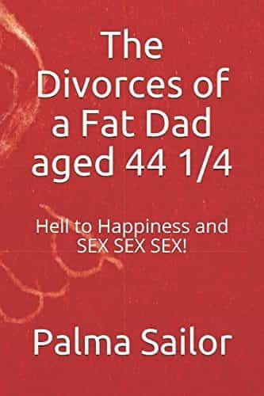

The following review is sponsored by The Divorces Of A Fat Dad Aged 44 1/4.
One of the most bizarre things about dating, relationships, and marriage is that not only is there very little (mainstream) advice on how to succeed at them, the very idea of giving or getting advice is scoffed at. Doctors, lawyers, electricians, and other professions require years of study and training before they can be turned loose on the world, yet when it comes to marriage and children—one of the most important aspects of any man’s life—we’re thrown in the driver’s seat and given no instructions on how the car operates.
To give an example, just before I sat down to write this review, a friend of mine broke the news that his brother’s wife was cheating on him with a black man. The guy and his wife are feminists and hardcore social justice warriors, and he’s soy to the extreme: my friend once suggested he try testosterone replacement therapy, but he refused because he was afraid the hormones might harm his wife somehow. My friend’s brother has resisted any and all advice he got on how to keep his marriage intact, and now he’s paying the price.
The Divorces Of A Fat Dad Aged 44 1/4 by Palma Sailor is an attempt to rectify the lack of actionable advice for married men. While most ROK readers are likely familiar with the gauntlet that is modern marriage, how many of us know someone who has ran it and survived? Sailor’s book is part-memoir and part-self-help guide, aimed at helping men avoid the mistakes he’s made and live their lives to the fullest.
While Sailor’s style won’t be for everyone, his wealth of knowledge and personal experience dealing with a failed marriage make The Divorces Of A Fat Dad Aged 44 1/4 more than worth reading.
It’s Not All Your Fault (Or Hers)

When a marriage or relationship goes wrong, it’s often tempting to blame its failure entirely on the other person. Women are exceptionally prone to doing this—just take a look at any chick magazine or listen to any middle-aged divorcee—but men aren’t immune either. How many men in this corner of the Internet have a sob story about how some heartless slag took their money and children and ran off?
The reality is that relationships are a two-way street. Spengler’s Universal Law of Gender Parity states that “in every corner of the world and in every epoch of history, the men and women of every culture deserve each other.” Flaws and vices in one sex are reflected in the other, because men and women are inseparable and dependent on each other for survival. The reason why modern women are entitled, ball-busting, and slutty is because modern men are weak-willed, wishy-washy, and lack backbone.
Spengler’s Universal Law of Gender Party also applies on the micro level: for example, if you consistently end up with crazy women, the problem might be with you. Palma Sailor takes this idea and runs with it in his book. The Divorces of a Fat Dad Aged 44 1/4 is a collection of journal entries he wrote over the course of six years, when he began the process of separating from his wife and putting his life back together. His journal entries are inter-spaced with commentary on what he was going through at the time:
Looking back on this diary writing it at 50, alcohol has been a constant theme. It’s prompting memories of exactly how much I used to drink in the marriage and early separation. I still regularly drink, but it’s at a much lower level now, and I often leave drinks unfinished because my agenda is the social interaction of the environment. If you are reading this and drinking a lot in your marriage then look in the mirror and ask yourself why?
Unlike most men who might end up in his position, Sailor doesn’t whine, complain, or make excuses. Instead, he critically reflects on his actions and thoughts, castigating himself for making foolish decisions that worsened his problems. For example, he begins the book by criticizing himself for bending to his wife’s whims and going to a party that he didn’t want to attend:
If I had had any frame at all in the marriage I should have just said no to going to the party. Now some 6 years on I have a much easier time with women as I ruthlessly enforce my own boundaries and frame.
Sailor’s writing style won’t be everyone’s cup of tea. His prose is very matter-of-fact, reminiscent of Ernest Hemingway or Charles Bukowski, as he uses understatement and subtlety to draw you into his world. However, most of the book is unedited, which he says was a deliberate editorial decision to preserve the integrity of his writing. Fortunately, his writing is smooth and slick enough that it shouldn’t cause any problems for most readers.
Dusting Yourself Off
The Divorces Of A Fat Dad Aged 44 1/4 has other things to recommend it. Despite the depths to which he falls over the course of the book, Sailor never resorts to bathos or cheap sentiment in an attempt to make you feel sorry for him. Additionally, despite the self-help mission of the book—and Sailor’s constant critical interjections—it never feels like he’s trying to give the reader a lecture. Sailor lets his story breathe and avoids pointless didactism, which reinforces his points and helps the reader learn from his mistakes.
Sailor’s book, while not short, isn’t too long either, and despite the fact that much of it is diary entries, it doesn’t feel like he’s padding the length out or wasting the reader’s time. Every vignette and word—whether its Sailor commenting on his wife’s shit tests or recalling a story about taking his son to the barber—is meaningful and helps propel the story along. Indeed, by the end of the book, I almost wanted to stand up and cheer.
Ultimately, The Divorces Of A Fat Dad Aged 44 1/4 is a book that is both entertaining and useful. As a first-hand account of a man’s descent into divorce hell and his subsequent escape, it’s an enthralling and poignant read. As a practical advice manual, it’s worth reading for any married—or soon-to-be-married—man who wants to avoid his life going up in flames. As an account of what marriage is like in the modern day, The Divorces Of A Fat Dad 44 1/4 is a must-read. Click here to view the book on Amazon.
Advertise Your Product Or Site On Return Of Kings